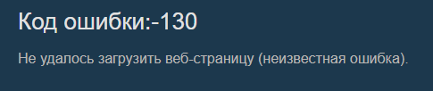
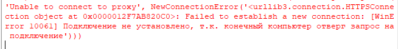

| Ник | Пост | Дата |
|---|---|---|
| jopi4Denis | Запустил 1_russia_blacklist_dnsredir, поправил чуть-чуть, ютуб работает, браузер работает, там все отлично. А вот стим прилег, питухон туда же   Господа хорошие, не дадите совета по исправлению? | 2024-09-13T15:17:20.972Z |
| TesterTi(TesterIt) | А что за прокси, если не секрет? Локальный или внешний? Какой конфиг прописан в 1_russia_blacklist_dnsredir ? | 2024-09-13T15:53:58.481Z |
| jopi4Denis | в том-то и дело, что прокси никакого нет. конфиг:
| 2024-09-13T18:19:10.304Z |
| TesterTi(TesterIt) | Попробуйте убрать -f 1 | 2024-09-13T18:21:14.571Z |
| jopi4Denis | все еще в хуй шлют | 2024-09-13T18:24:55.313Z |
| TesterTi(TesterIt) | А сам по себе-то ютуб открывается? | 2024-09-13T18:27:12.560Z |
| jopi4Denis | да | 2024-09-13T18:27:46.620Z |
| TesterTi(TesterIt) | А если так: | 2024-09-13T18:31:08.851Z |
| jopi4Denis | та ж ебень выходит | 2024-09-13T18:38:52.122Z |
| TesterTi(TesterIt) | Ну тогда не знаю… Если без гудбая все ок, то поставьте юбуст для ютуба и censor для остальных сайтов | 2024-09-13T18:42:03.514Z |
| jopi4Denis | UPD: забыл написать, что все поправил. оказалось, что после использования наебнулся интернет вообще везде, кроме браузера. помогло это | 2024-09-19T13:34:19.223Z |
{kind=link}